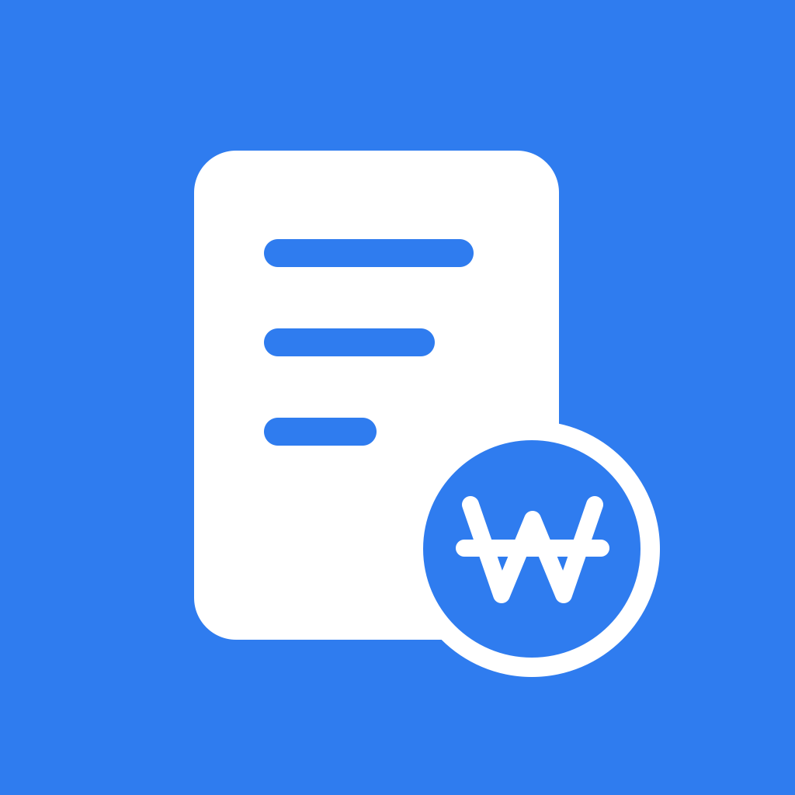

개인정보처리방침
시행일: 2026년 10월 14일 · 운영자: 청솔제이(everpinej)
활동·정산·서류 내용은 기기에 보관합니다. 무료 앱 운영을 위한 Google AdMob 배너 광고는 인터넷을 사용하며 광고 SDK가 아래의 정보를 처리할 수 있습니다. 앱의 기록을 보관하는 개발자 서버와 회원가입은 없습니다.
1. 기기에서 처리하는 기록
사용자가 입력한 기관·담당자 연락처·활동 일정·수당·실비·입금 기록·계좌 별칭·메모·첨부파일을 기기 안에서 처리합니다. 이 내용을 개발자 서버에 업로드하거나 광고 요청에 포함하지 않습니다. PDF·이미지의 문자 인식과 안내문 분석도 기기에서 이루어집니다.
저장한 기록과 첨부파일은 AES-256-GCM으로 암호화하며 키는 운영체제 보안 저장소에 보관합니다. 서류함은 기기 인증으로 보호합니다. 운영체제의 생체인증 결과만 이용하며 생체정보 원본을 수집하지 않습니다.
2. 광고에서 처리하는 정보
Google Mobile Ads SDK(AdMob) 및 User Messaging Platform(UMP)을 사용합니다. 앱은 비맞춤형 광고를 요청하고 iOS의 추적 허용을 요청하지 않으며 Android 광고 ID 권한을 제외합니다. 다만 비맞춤형 광고도 광고 제공·성과 측정·보안·부정 사용 방지를 위해 정보를 처리할 수 있습니다.
| 항목 | 처리 목적 |
|---|---|
| IP 주소 및 이를 통한 대략적인 위치 | 광고 제공, 지역별 동의 절차, 부정 사용 방지 |
| 기기·앱 범위 식별 정보 | 광고 제공·측정, 빈도 관리, 보안 |
| 광고 노출·클릭 등 상호작용 | 광고 성과 분석과 서비스 개선 |
| 오류·성능 등 진단 정보 | SDK 안정성, 광고 품질과 보안 |
| 광고 개인정보 선택·동의 상태 | 사용자의 선택을 적용하고 동의 요건 처리 |
Google은 이 정보를 전송 중 암호화하며 미국 등 Google의 서비스 운영 국가에서 처리할 수 있습니다. 보유 기간과 처리 방식은 Google 개인정보처리방침 및 Google 파트너 서비스 정보 처리 안내를 따릅니다. 앱에는 별도 Firebase Analytics나 개발자 이용 분석 도구를 추가하지 않았습니다.
문자 인식의 기술 정보
기기 내 문자 인식에 Google ML Kit가 사용될 수 있습니다. 원본 이미지·텍스트와 인식 결과는 Google 서버로 전송하지 않습니다. ML Kit는 기능의 안정성·성능 분석과 오용 방지를 위해 기기 모델·운영체제, 앱 버전, 설치 단위 식별자, 처리 시간, 이미지 형식·해상도, 기능 사용 이벤트와 오류 코드를 HTTPS로 전송할 수 있습니다. 자세한 내용은 ML Kit 개인정보 안내를 참고하세요.
3. 동의 및 선택
관련 지역에서는 광고를 요청하기 전에 UMP 동의 화면을 표시합니다. 개인정보 선택 항목이 필요한 경우 앱의 ‘설정 → 광고 개인정보 선택’에서 변경할 수 있습니다. 동의 상태가 광고 요청을 허용하지 않으면 광고를 요청하지 않습니다. 광고 오류나 동의 절차 실패로 기록 기능을 막지 않습니다.
4. 권한
- 카메라·사진: 사용자가 선택한 촬영·문서 가져오기에 사용
- 알림: 사용자가 허용한 일정·정산 관련 로컬 알림에 사용
- 생체인증·기기 암호: 서류함과 백업 접근 확인에 사용
- 인터넷·네트워크 상태: 광고와 동의 정보를 불러오는 데 사용
권한은 운영체제 설정에서 변경할 수 있습니다. 거부하면 해당 기능이 제한되지만 직접 기록은 가능합니다. 앱은 정밀 위치, 주소록, 금융기관 계좌 접근 권한을 요청하지 않습니다.
5. 공유·백업·삭제
공유나 내보내기는 사용자가 선택할 때만 실행합니다. 전달한 사본에는 사용자가 고른 기록과 서류가 포함되며 수신 앱의 정책이 적용됩니다. 전달된 파일은 수당노트에서 회수할 수 없습니다.
기록은 사용자가 삭제하거나 앱을 제거할 때까지 기기에 남습니다. 자동 OS 백업은 사용하지 않으며 비밀번호로 암호화한 수동 백업을 만들 수 있습니다. 내보낸 백업·공유 사본과 가져오기 전 원본은 별도로 삭제해야 합니다. 앱 삭제 전에 필요한 자료를 백업하세요. 백업 비밀번호는 복구할 수 없습니다.
6. 고객지원
문의 시 제공한 이메일 주소와 문의 내용은 문제 해결 및 답변을 위해 처리합니다. 민감한 서류는 보내지 마세요. 지원 정보의 열람·정정·삭제 요청은 contact@everpinej.com으로 보내실 수 있습니다. 기기에만 있는 기록은 앱에서 직접 관리해야 하며 운영자가 원격으로 읽거나 복구할 수 없습니다.
7. 대상 이용자 및 웹사이트
수당노트는 강의·심사·자문 등 전문 활동을 하는 성인을 대상으로 하며 아동용 서비스가 아닙니다. 이 지원 웹사이트는 GitHub Pages로 제공됩니다. 호스팅 제공업체는 GitHub 개인정보처리방침에 따라 접속 기록을 처리할 수 있습니다. 지원 페이지에는 광고나 별도 이용 분석 도구를 넣지 않습니다.
8. 변경 및 연락처
처리 방식이 변경되면 이 페이지의 시행일과 내용을 갱신하고 필요한 경우 앱에서 안내합니다.
운영자: 청솔제이(everpinej)
개인정보·고객지원: contact@everpinej.com